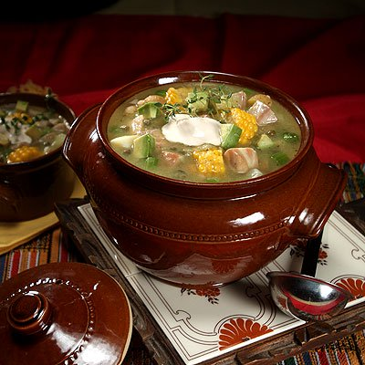
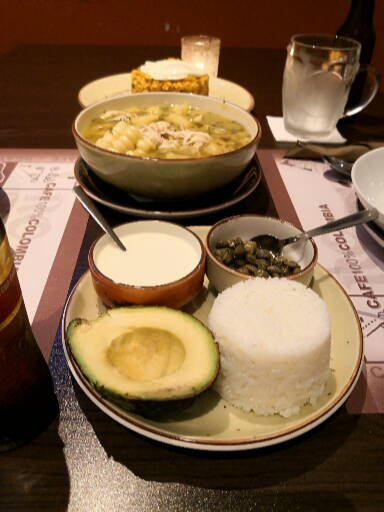
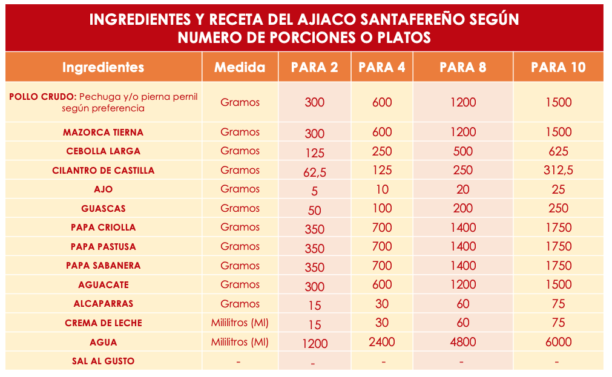

RECETAS COLOMBIANAS
AJIACO SANTAFEREÑO

RECETA DEL AJIACO SANTAFEREÑO
PARA 4 PORCIONES:
INGREDIENTES
Una cucharada colmada de harina (50 gramos)
600 gramos de mazorca tierna (2 mazorcas pequeñas)
250 gramos de cebolla larga
125 gramos de cilantro de castilla (una rama)
10 gramos de ajo
100 gramos de guascas (un manojo)
700 gramos de papa sabanera
700 gramos de papa pastusa
2,4 litros de agua
Sal al gusto
ACOMPAÑAMIENTO
30 ml de crema de leche
30 ml de alcaparras
600 gramos de aguacate


¿Queres ver mas recetas tipicas de Colombia?
ABOJARRADOS
AREPAS
CHANGUA
PANDEBONOS VALLUNOS